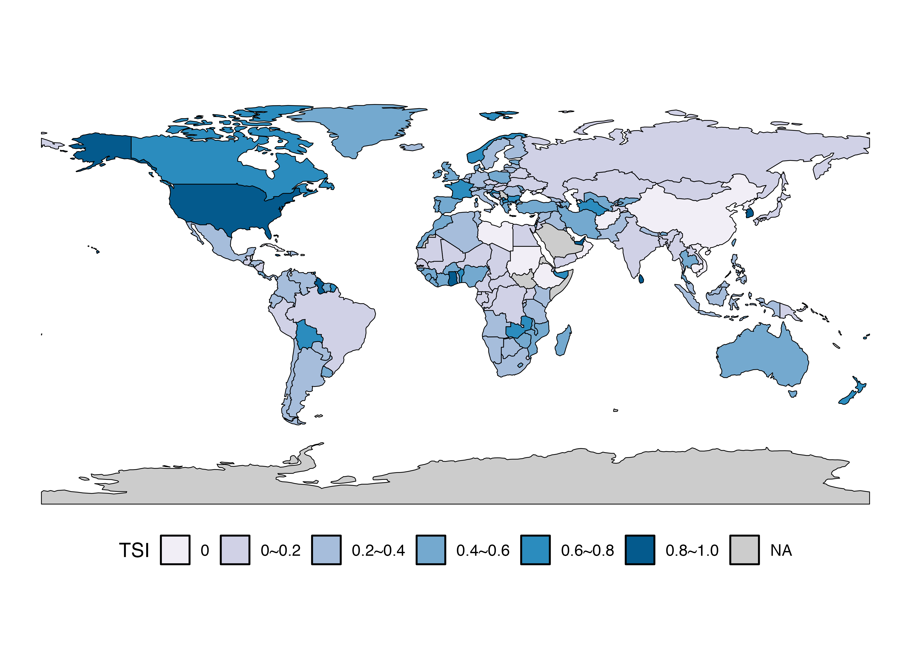

enp <- function(x) {
return((1 / sum(x^2)))
}
tsi <- function(x) {
ss1 <- rev(sort(x))[1]
ss2 <- rev(sort(x))[2]
return((ss1 + ss2) * (ss2 / ss1))
}
compare <- function(x) {
cat("ENP: ", enp(x), "\n")
cat("TSI: ", tsi(x), "\n")
}二大政党制の指標に関する私案
新しい指標の提案
- Two-party System Index (TSI)
- \({SS}_1\): 第一政党の議席率
- \({SS}_2\): 第二政党の議席率
\[ ({SS}_1 + {SS}_2)\frac{{SS}_2}{{SS}_1}, \quad \text{where} \quad 1 > {SS}_1 \geq {SS}_2 > 0 \]
何を重視するか
- （A）全議席における二大政党議席数の割合（\(({SS}_1 + {SS}_2)\)）
- 1に近いほど二大政党制
- （B）二大政党の勢力均衡（\(\frac{{SS}_2}{{SS}_1}\)）
- 1に近いほど二大政党制
- 0に近いほど一党優位制か多党制
- （A）と（B）の積が1なら完全なる二大政党制（2つの政党がちょうど50%、50%）
- 0に近いほど多党制か、一党優位制
有効政党数（Laakso and Taagepera, 1979）との比較
- TSIはあくまでも二大政党制の指標
- 第3政党以下の議席率は計算に用いない。
いくつかの例を使って比較してみる。
- 議会内に2政党のみ存在する場合の比較
- 比較のためにENPは元のENPから1を引く
tibble(PartyA = 50:99 / 100,
PartyB = 50:1 / 100) %>%
rowwise() %>%
mutate(ENP = enp(c(PartyA, PartyB)) - 1,
TSI = tsi(c(PartyA, PartyB))) %>%
pivot_longer(cols = ENP:TSI,
names_to = "Type",
values_to = "Index") %>%
ggplot() +
geom_line(aes(x = PartyA, y = Index, color = Type),
size = 1) +
labs(x = "第一政党の議席率",
y = "多党制/一党優位制 ← 指数 → 二大政党制", color = "") +
theme_bw(base_size = 12) +
theme(legend.position = "bottom")
実は政党が2つのみだと、そこまで大きな差はないかも知れない。ただ、2つの政党の議席率がアンバランスしている時、ENPはそれでもより二大政党制と評価し、TSIは一党優位制と評価する。2つの指標が大きく異なるケースは、主に議会内政党数が3以上の場合（ここはENPから1を引かない）。
- 4政党: 40%、40%、10%、10%
example1 <- c(0.4, 0.4, 0.1, 0.1)
compare(example1)ENP: 2.941176
TSI: 0.8 - 4政党: 25%、25%、25%、25%
example2 <- c(0.25, 0.25, 0.25, 0.25)
compare(example2)ENP: 4
TSI: 0.5 - 4政党: 60%、30%、5%、5%
example3 <- c(0.6, 0.3, 0.05, 0.05)
compare(example3)ENP: 2.197802
TSI: 0.45 - 7政党: 25%、23%、20%、10%、10%、7%、5%
example4 <- c(0.25, 0.23, 0.20, 0.10, 0.10, 0.07, 0.05)
compare(example4)ENP: 5.47046
TSI: 0.4416 - 10政党: 10%、10%、10%、10%、10%、10%、10%、10%、10%、10%
example5 <- rep(0.1, 10)
compare(example5)ENP: 10
TSI: 0.2 - 8政党: 57%、7%、21%、9%、2%、2%、1%、1%
example6 <-c(0.57, 0.07, 0.21, 0.09, 0.02, 0.02, 0.01, 0.01)
compare(example6)ENP: 2.610966
TSI: 0.2873684 - 7政党: 69%、8%、7%、6%、5%、3%、2%
example7 <- c(0.69, 0.08, 0.07, 0.06, 0.05, 0.03, 0.02)
compare(example7)ENP: 2.021019
TSI: 0.08927536 | 政党数 | 議席の分布 | ENP | TSI |
|---|---|---|---|
| 4 | [40, 40, 10, 10] | 2.941 | 0.800 |
| 4 | [25, 25, 25, 25] | 4.000 | 0.500 |
| 4 | [60, 30, 5, 5] | 2.198 | 0.450 |
| 7 | [25, 23, 20, 10, 10, 7, 5] | 5.470 | 0.442 |
| 10 | [10, 10, 10, 10, 10, 10, 10, 10, 10, 10] | 10.000 | 0.200 |
| 8 | [57, 21, 9, 7, 2, 2, 1, 1] | 2.611 | 0.287 |
| 7 | [69, 8, 7, 6, 5, 3, 2] | 2.021 | 0.089 |
二大政党制の指標としては
- TSIを使ってみる。
- 上位二政党に限定し、ENPを計算する。
どっちでもいけそうな気はする。
実際のデータを用いた比較
- データはV-Partyを使用
- ハイライトされたENP列は2$$0.25の国を表す。
- ハイライトされたTSI列は0.75以上の国を表す。
- 極端な例として、コンゴ民主共和国の場合、第1政党が議会定数151の内、112議席（74%）を占めているものの、ENPは2.208で極めて二大政党制に近いと判断されるが、TSIは0.064。
- ENPを使うと一党優位制を二大政党制と間違って判断してしまう可能性がある。
| Name | Year | ENP | TSI |
|---|---|---|---|
| Afghanistan | 2010 | 1.000 | 0.000 |
| Albania | 2017 | 2.544 | 0.485 |
| Algeria | 2017 | 5.627 | 0.347 |
| Angola | 2017 | 1.907 | 0.311 |
| Argentina | 2019 | 4.884 | 0.309 |
| Armenia | 2018 | 1.991 | 0.255 |
| Australia | 2019 | 3.222 | 0.479 |
| Austria | 2019 | 3.938 | 0.343 |
| Azerbaijan | 2015 | 2.268 | 0.552 |
| Bahrain | 2014 | 1.164 | 0.053 |
| Bangladesh | 2018 | 1.342 | 0.079 |
| Barbados | 2018 | 1.000 | 0.000 |
| Belarus | 2019 | 1.498 | 0.112 |
| Belgium | 2019 | 9.823 | 0.239 |
| Benin | 2019 | 1.966 | 0.767 |
| Bhutan | 2013 | 1.768 | 0.468 |
| Bolivia | 2019 | 2.391 | 0.673 |
| Bosnia and Herzegovina | 2018 | 9.105 | 0.239 |
| Botswana | 2019 | 2.380 | 0.332 |
| Brazil | 2018 | 19.066 | 0.195 |
| Bulgaria | 2017 | 3.423 | 0.613 |
| Burkina Faso | 2015 | 3.633 | 0.416 |
| Burma/Myanmar | 2015 | 1.651 | 0.102 |
| Burundi | 2015 | 1.570 | 0.267 |
| Cambodia | 2018 | 1.000 | 0.000 |
| Cameroon | 2013 | 1.458 | 0.112 |
| Canada | 2019 | 2.796 | 0.634 |
| Cape Verde | 2016 | 2.113 | 0.695 |
| Central African Republic | 2016 | 4.645 | 0.122 |
| Chad | 2011 | 2.523 | 0.058 |
| Chile | 2017 | 7.718 | 0.356 |
| China | 2013 | 1.000 | 0.000 |
| Colombia | 2018 | 6.048 | 0.381 |
| Comoros | 2015 | 4.360 | 0.579 |
| Costa Rica | 2018 | 4.766 | 0.449 |
| Croatia | 2016 | 3.316 | 0.675 |
| Cuba | 2013 | 1.000 | 0.000 |
| Cyprus | 2016 | 5.059 | 0.512 |
| Czech Republic | 2017 | 4.812 | 0.165 |
| Democratic Republic of the Congo | 2011 | 30.773 | 0.136 |
| Denmark | 2019 | 6.205 | 0.455 |
| Djibouti | 2018 | 1.281 | 0.121 |
| Dominican Republic | 2016 | 2.658 | 0.309 |
| Ecuador | 2017 | 2.619 | 0.371 |
| Egypt | 2015 | 2.454 | 0.135 |
| El Salvador | 2018 | 4.077 | 0.324 |
| Equatorial Guinea | 2017 | 1.020 | 0.010 |
| Estonia | 2019 | 4.185 | 0.453 |
| Eswatini | 2013 | 1.352 | 0.182 |
| Ethiopia | 2015 | 1.197 | 0.000 |
| Fiji | 2018 | 2.207 | 0.733 |
| Finland | 2019 | 6.470 | 0.385 |
| France | 2017 | 3.013 | 0.264 |
| Gabon | 2018 | 2.091 | 0.086 |
| Georgia | 2016 | 1.586 | 0.223 |
| Germany | 2017 | 5.583 | 0.381 |
| Ghana | 2016 | 2.057 | 0.817 |
| Greece | 2019 | 2.718 | 0.443 |
| Guatemala | 2019 | 7.305 | 0.141 |
| Guinea | 2013 | 3.034 | 0.552 |
| Guinea-Bissau | 2019 | 3.053 | 0.417 |
| Guyana | 2015 | 1.999 | 0.969 |
| Haiti | 2015 | 8.992 | 0.228 |
| Honduras | 2017 | 3.091 | 0.349 |
| Hungary | 2018 | 2.557 | 0.161 |
| Iceland | 2017 | 6.541 | 0.296 |
| India | 2019 | 3.119 | 0.113 |
| Indonesia | 2019 | 7.443 | 0.246 |
| Iran | 2016 | 3.307 | 0.495 |
| Iraq | 2018 | 11.481 | 0.276 |
| Ireland | 2016 | 4.850 | 0.523 |
| Israel | 2019 | 5.701 | 0.526 |
| Italy | 2018 | 4.342 | 0.307 |
| Ivory Coast | 2016 | 1.931 | 0.434 |
| Jamaica | 2016 | 1.999 | 0.969 |
| Japan | 2017 | 2.512 | 0.138 |
| Jordan | 2013 | 1.486 | 0.020 |
| Kazakhstan | 2016 | 1.343 | 0.077 |
| Kenya | 2017 | 3.354 | 0.315 |
| Kosovo | 2019 | 5.788 | 0.457 |
| Kuwait | 2013 | 3.582 | 0.213 |
| Kyrgyzstan | 2015 | 4.821 | 0.404 |
| Laos | 2016 | 1.070 | 0.035 |
| Latvia | 2018 | 7.168 | 0.271 |
| Lebanon | 2018 | 13.816 | 0.197 |
| Lesotho | 2017 | 4.183 | 0.406 |
| Liberia | 2017 | 5.393 | 0.495 |
| Libya | 2014 | 1.000 | 0.000 |
| Lithuania | 2016 | 4.405 | 0.346 |
| Luxembourg | 2013 | 3.947 | 0.340 |
| Madagascar | 2019 | 2.419 | 0.472 |
| Malawi | 2019 | 3.713 | 0.538 |
| Malaysia | 2018 | 6.410 | 0.397 |
| Maldives | 2019 | 1.736 | 0.103 |
| Mali | 2013 | 4.406 | 0.146 |
| Malta | 2013 | 1.967 | 0.770 |
| Mauritania | 2013 | 3.531 | 0.134 |
| Mauritius | 2019 | 2.250 | 0.309 |
| Mexico | 2018 | 4.724 | 0.239 |
| Moldova | 2019 | 3.579 | 0.551 |
| Mongolia | 2016 | 1.342 | 0.134 |
| Montenegro | 2016 | 4.509 | 0.140 |
| Morocco | 2016 | 5.064 | 0.471 |
| Mozambique | 2019 | 2.159 | 0.576 |
| Namibia | 2019 | 2.189 | 0.210 |
| Nepal | 2017 | 3.416 | 0.350 |
| Netherlands | 2017 | 8.386 | 0.213 |
| New Zealand | 2017 | 2.667 | 0.697 |
| Nicaragua | 2016 | 1.667 | 0.167 |
| Niger | 2016 | 4.283 | 0.195 |
| Nigeria | 2019 | 2.149 | 0.488 |
| North Korea | 2019 | 1.000 | 0.000 |
| North Macedonia | 2016 | 2.811 | 0.800 |
| Norway | 2017 | 4.959 | 0.510 |
| Oman | 2019 | 1.000 | 0.000 |
| Pakistan | 2018 | 3.600 | 0.378 |
| Panama | 2019 | 3.029 | 0.385 |
| Papua New Guinea | 2017 | 8.676 | 0.191 |
| Paraguay | 2018 | 2.865 | 0.299 |
| Peru | 2016 | 2.730 | 0.196 |
| Philippines | 2019 | 5.591 | 0.258 |
| Poland | 2019 | 2.837 | 0.457 |
| Portugal | 2019 | 2.991 | 0.578 |
| Republic of the Congo | 2017 | 2.208 | 0.064 |
| Romania | 2016 | 3.543 | 0.304 |
| Russia | 2016 | 1.666 | 0.106 |
| Rwanda | 2018 | 1.702 | 0.106 |
| Sao Tome and Principe | 2014 | 2.208 | 0.432 |
| Senegal | 2017 | 1.696 | 0.132 |
| Serbia | 2016 | 3.232 | 0.142 |
| Seychelles | 2016 | 1.955 | 0.736 |
| Sierra Leone | 2018 | 2.912 | 0.578 |
| Singapore | 2015 | 1.143 | 0.072 |
| Slovakia | 2016 | 5.667 | 0.200 |
| Slovenia | 2018 | 7.048 | 0.219 |
| Solomon Islands | 2019 | 4.139 | 0.221 |
| South Africa | 2019 | 2.585 | 0.287 |
| South Korea | 2016 | 2.855 | 0.811 |
| Spain | 2019 | 4.744 | 0.442 |
| Sri Lanka | 2015 | 2.500 | 0.800 |
| Sudan | 2015 | 1.740 | 0.000 |
| Suriname | 2015 | 2.536 | 0.597 |
| Sweden | 2018 | 5.615 | 0.342 |
| Switzerland | 2019 | 5.851 | 0.338 |
| Syria | 2016 | 1.471 | 0.250 |
| Taiwan | 2016 | 2.168 | 0.470 |
| Tajikistan | 2015 | 1.510 | 0.087 |
| Tanzania | 2015 | 1.908 | 0.244 |
| Thailand | 2019 | 5.692 | 0.430 |
| The Gambia | 2017 | 3.225 | 0.100 |
| Timor-Leste | 2018 | 2.458 | 0.594 |
| Togo | 2018 | 2.146 | 0.259 |
| Trinidad and Tobago | 2015 | 2.051 | 0.722 |
| Tunisia | 2019 | 8.778 | 0.303 |
| Turkey | 2018 | 2.272 | 0.488 |
| Turkmenistan | 2018 | 2.805 | 0.719 |
| Uganda | 2016 | 1.963 | 0.187 |
| Ukraine | 2019 | 2.889 | 0.120 |
| United Arab Emirates | 2019 | 2.000 | 1.000 |
| United Kingdom | 2019 | 2.400 | 0.486 |
| United States of America | 2018 | 2.000 | 0.976 |
| Uruguay | 2019 | 3.322 | 0.520 |
| Uzbekistan | 2019 | 4.177 | 0.403 |
| Vanuatu | 2016 | 14.426 | 0.201 |
| Venezuela | 2015 | 6.436 | 0.222 |
| Vietnam | 2016 | 1.092 | 0.000 |
| Yemen | 2003 | 1.674 | 0.188 |
| Zambia | 2016 | 2.441 | 0.642 |
| Zanzibar | 2010 | 1.972 | 0.786 |
| Zimbabwe | 2018 | 1.973 | 0.468 |
